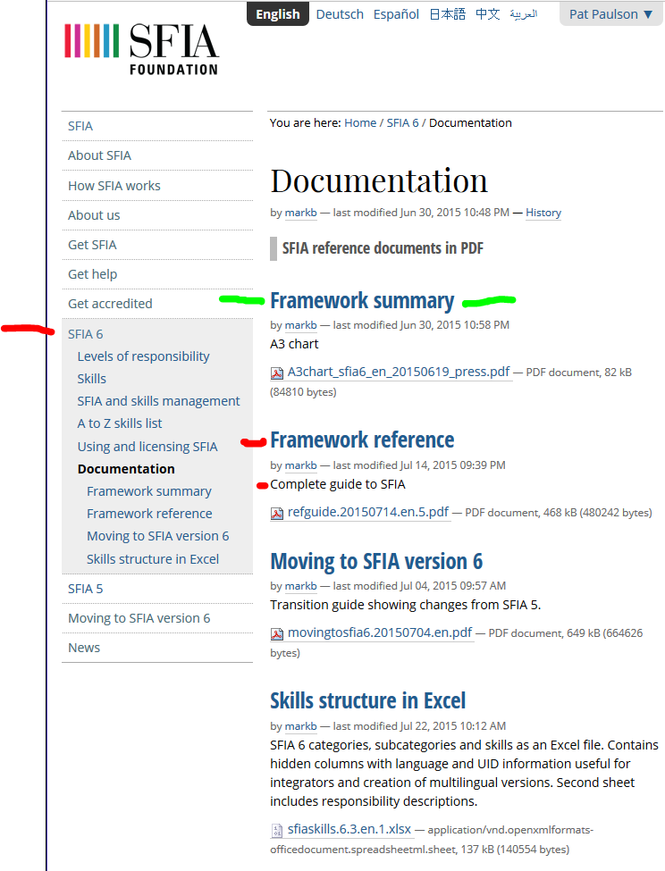

These exercises introduce the concept of the organization and coordination of activity. After completing this assignment you will be able to: Identify and describe dependencies and coordination Evaluate delivery models and required coordination Identify the elements of a business process that cross functions Develop a simple process model Evaluate the use of Statistical Process Control on various processes
The goal of this assignment is to familiarize you with the various organization structures and styles. You are expected to devlop a working knowledge of the following. If you are having trouble there are several resources available, besides a Google Search You can also ask a teaching assistant or ask the instructor for assistance. Process Management Tools Process Modeling Continuous Improvement Process Control Process Frameworks
Reflect on a business process that you experience on a daily or weekly basis. It can be something as simple as buying a hamburger at a local restaurant, or the purchase of groceries. Then contemplate and answer the following questions.
What steps are involved in this process? Consider the steps you take in arriving at your decision to make a purchase. (50) 1. Make a brief list of the steps you take, considering time, place, whether other tasks are competing for your time, financial impacts... (50) 2. Now consider what happens after you have made your decision and executed your purchase. Make a brief list of processes put into motion at the vendor by your purchase. (50) 3. Reflect on your overall experience with this process. Make a brief statement of how the vendor could improve the purchase process to either save you or the vendor or both, time or money. (50) 4. Reflect on the vendor change to this process that you just suggested. Make a brief list of factors that would make the vendor MORE likely to implement your suggested change. (50) 5. Reflect on the vendor change to this process that you just suggested. Make a brief list of factors that would make the vendor LESS likely to implement your suggested change. (50) 6. Reflect on this exercise. Make a brief statement of how a vendor could go about capturing possible process improvement ideas from customers, employees and suppliers.
Review the section of the chapter on 'Process Control and Continuous Improvement' Some important points to consider are: Creating a complex system, like developing a new product, is not a repetitive process. The production process of manufacturing products, once they are developed, is a very well defined, repetitive process. Continuous improvement aims to improve the effectiveness and efficiency of a defined process. (50) 7. Is the creation of a software application a well defined, repetitive process like the manufacturing processes which were the focus of Deming and Juran's work?
Review the 'Process Proliferation' section of this chapter. Note that there are several problems when an enterprise has too many processes. After looking at this material, consider the effect on an organization. (50) 8. Briefly explain what you think is the major issue with process proliferation. (50) 9. Statistical Process Control techniques have successfully been applied to defined manufacturing processes. The goal is to reduce variation and improve quality. W.E. Deming was noted for his work in reducing variation in physical manufacturing processes. Software development and other complex, creative processes are not, and cannot be so well defined. The reason is that it is difficult, if not impossible, to define all of the significant process variables. What model is an alternative to the defined model for a creative process like software development?
Review the section of the chapter on 'Why Process Management'. (50) 10. Briefly explain the importance of 'process conception'. (50) 11. Briefly explain the major pitfall in having process 'silos'. (50) 12. Briefly explain the danger of process proliferation. (50) 13. What is one of the major tenets of the Lean movement with respect to process management?
Visit the Skills Framework for the Information Age website. Review the introductory video on the home page. Register and create an account. After you create an account, are registered and login you will find two new links in the left sidebar, expand 'SFIA6' Download the 'SFIA6 Complete Reference Guide'. You will use it as you complete your skills assessment.  Then download this spreadsheet and prepare to complete a skills assessment. You will choose a category and sub-category based on your major and interests. To zero in on the category/sub-category pairing that is appropriate for you, consider downloading and reviewing the 'Framework summary' which is available on the SFIA website just above the 'Framework reference'. Strategy and architecture-Information strategy, Advice and guidance, Business strategy and planning or Technical strategy and planning Change and transformation-Business change implementation, or Business change management Development and implementation-Systems development, User experience, or Installation and integration Delivery and operation-Service design, Service transition, or Service operation Skills and quality-Skills management, People management, or Quality and conformance Relationships and engagement-Stakeholder management, or Sales and marketing
Discuss the different categories with members of your group and fellow classmates. Consider possible career paths and what type of digital skills will be required. Consider what digital skills are most interesting to you. (50) 14. What is your primary current major? (50) 15. Which Category did you choose? (50) 16. Which Sub-Category did you choose? After making a category/sub-category choice you need to examine the Skill column. There can be from 2 to 13 skills listed for a category/sub-category pairing. Each skill has entries for a subset of the seven levels: Follow Assist Apply Enable Ensure/Advise Initiate/Influence Set Strategy/Inspire/Mobilize (50) 17. Note that you will begin your career involved in lower level skills, moving to higher levels as you gain additional skills. Review the skills required for your contemplated career path, list one or more skills that you should be improving upon. (200) 18. Open a new Word Document. Copy and paste the skill(s) that you decide to improve upon into the document. Do research on the internet, look at available courses on Lynda.com Synthesize this information to create a learning plan for yourself that will help you improve your skills. Feel free to ask the professor, teaching assistant, group members, your mentor and fellow classmates for advice. Once you have completed this document, print it as a .pdf file named 'MyDigitalSkills'. Save it in a convenient place as you will be combining it and uploading it to a D2L Assignment Folder later.
For this Exercise, please read all of these instructions. Make sure that you have completed all the previous exercises by filling in your answers, and publishing them to your website. Then browse to your https://classes.winona.edu webiste, make sure all the Exercises are completed, then save it as .pdf file in the same location that you saved your Word document from question 18. (100) 19. Assignment .pdf file creation.
To proceed you must have Windows 10 which includes 'Print to PDF' installed. You know it is installed when one of the print dialog box choices is "Microsoft Print to PDF" Refer to this url and follow these steps. https://www.howtogeek.com/248462/how-to-combine-images-into-one-pdf-file-in-windows/ You will be creating one .pdf (portable document format) file from the six screen shots that you have taken. Open File Explorer, make sure the screen shot files are properly named(Ex1.. , Ex2.. , Ex3.. ) and sorted in Ascending order. Select the two screen shots to be combined. Right Click and select 'Print' from the pop-up menu. See the howtogeek article for more options. Click on 'Print' and save the file with a name such as "xxx...ScreenShots.pdf" in an appropriate location where you can easily find it again, such as OneDrive-MNSCU/... Remember to use PDFill when you need to Merge the screen shot .pdf file with any other .pdf file(s) Exercise 8-Submit Assignment (100) 20. Upload your file 'AssignmentSummative07.pdf' to the D2L 'Summative07' Assignment Folder When all the Exercises are completed, while viewing this assignment on your https://classes.winona.edu/... website, press the Submit button below.